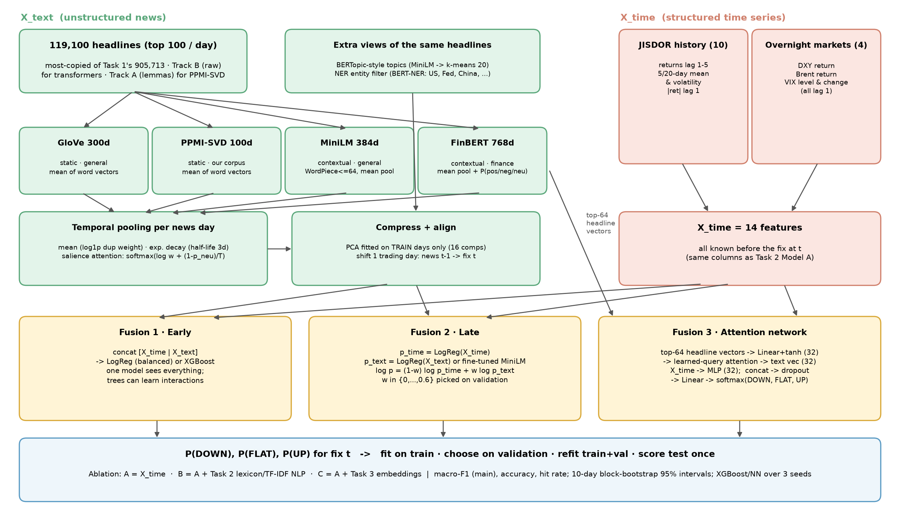
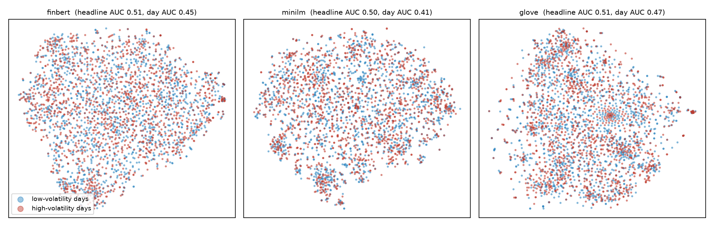
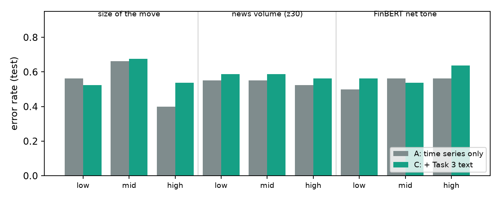

Task 2 left us with an honest but unsatisfying result: lexicon and TF-IDF features did not reliably help predict which way the rupiah moves at the next JISDOR fix. Task 3 asks whether better representations of the news, pre-trained and transformer embeddings fused with the exchange-rate history, change that. We kept everything else fixed (same target: UP / FLAT / DOWN with a 0.10% dead-zone, same chronological split of 726 / 235 / 240 days, same rule: choose on validation, refit on train+validation, score test once) so any difference comes from the text. Short answer: the richer text beats Task 2's NLP features, but it still does not measurably beat a model that ignores the news. Part d shows why.
In Task 2 we were only allowed word lists and a TF-IDF we fitted ourselves. Task 3 lets us use pre-trained models, so the question became: which representation of a headline, and how do ~760 headlines a day turn into one row for the model? We picked four encoders as a 2×2, so that every comparison changes only one thing: static vs contextual, and general-purpose vs domain-specific. All four read the same headlines: the 100 most-copied headlines of each news day (119,100 of Task 2's 905,713). These are the stories most outlets picked up (22.6% of the copy-weighted news), and one shared set keeps the comparison fair. We had planned to encode everything, but FinBERT on all 905k headlines kept stalling on our 8 GB laptop, so we chose a smaller set that every model could actually finish.
| Encoder | Type | Trained on | Tokenisation & pooling | Why we chose it |
|---|---|---|---|---|
| GloVe 6B-300d | static, general | Wikipedia + Gigaword | lower-cased words, Track B; mean of word vectors (300-d) | The "what does general English already know" baseline. One vector per word, so Turkey the country and turkey the food are the same. |
| PPMI-SVD (ours) | static, our domain | our 2021-24 training headlines only | Track A lemmas (aliases merged); mean of word vectors (100-d) | SVD on a positive-PMI matrix optimises the same thing as Word2Vec skip-gram (Levy & Goldberg, 2014). It learns our vocabulary: fed → powell, ecb, hawkish; war → invasion, ukraine. |
| MiniLM-L6-v2 | contextual, general | 1B sentence pairs (similarity) | WordPiece, ≤64 tokens, Track B; mean pooling + L2 norm (384-d) | Built to put sentences with the same meaning close together, which is what topics and t-SNE need. |
| FinBERT (ProsusAI) | contextual, finance | BERT + financial news, tuned on Financial PhraseBank | WordPiece, ≤64 tokens, Track B; (1) [CLS] head → P(pos, neg, neu); (2) mean pooling of the last layer (768-d) | Reads tone the way a market analyst would, so "rate hike" or "default" carry meaning a general model misses. |
Tokenisation and pooling choices. Transformers read Track B (cased, punctuation kept) because their WordPiece vocabularies were trained on raw text; feeding them our lemmas would be text they never saw. We cap at 64 tokens because 99% of headlines have 22 words or fewer, so nothing real is cut. We use mean pooling rather than the [CLS] vector: MiniLM was trained with mean pooling, and FinBERT's [CLS] was fine-tuned only to say positive/negative/neutral, so it throws away what the headline is about. We keep both from FinBERT: its sentiment head for tone, and the mean-pooled vector for content.
Going beyond one sentiment score per article (brief 1b). Every option below is its own feature block, so the ablation can tell them apart:
log1p(dup_count) as in Task 2; (ii) exponential decay
with a 3-day half-life, because a war that started yesterday still matters today; (iii) salience attention, a within-day
softmax over log w + (1 − Pneutral)/T, so widely copied and emotionally charged headlines dominate; and
(iv) a learned attention inside the fusion network (part b).dslim/bert-base-NER tags people, organisations and places in the 50 most-copied headlines of
each day (59,550 headlines). We map them to a watchlist (US, Fed, Indonesia/BI, China, Russia-Ukraine, Middle East, central banks) and compute each group's
share and tone. Unlike Task 1's keyword flags, NER reads context: "Powell" counts as the Fed.From vectors to features, without leakage. A daily average of 768-d vectors is still 768 columns for 726 training days, so each block is cut to 16 PCA components fitted on training days only. Everything else that is fitted (PPMI word vectors, topic centroids, fine-tuned weights) also sees only news before 30 Aug 2024. Every text feature gets the same one-day shift as in Tasks 1 and 2 (news of bucket t−1 sits next to fix t), and a test checks this on every run.
Xtime is the 14 features of Task 2's best baseline: 10 JISDOR price features plus the overnight DXY, Brent and VIX controls. Xtext is any of the text blocks above. We tried all three standard ways of merging them, and each is selected on validation like everything else:

log p = (1−w)·log ptime + w·log ptext. The weight
w ∈ {0, 0.1, …, 0.6} is picked on validation, and w = 0 is exactly Model A, so w tells us directly how much the data trusts the news.Model A is the time series only (the 14 Xtime features, Task 2's best baseline), Model B adds Task 2's 46 lexicon and TF-IDF features, and Model C adds the Task 3 text block that won on validation. Among all 36 Task 3 configurations (part b and the table below), the winner was FinBERT's tone features with XGBoost (val macro-F1 0.465). We then re-tuned it on a wider grid (6 values of C for logistic regression; 36 XGBoost settings over depth, number of trees, learning rate and min-child-weight; PCA size is tuned only for embedding blocks, so it did not apply here). The original settings stayed best. XGBoost results are the mean ± std over 3 seeds.
| Model (macro-F1) | Logistic regression | XGBoost (3 seeds) | Test accuracy (LR / XGB) | ||
|---|---|---|---|---|---|
| val | test | val | test | ||
| A0: price history only | 0.403 | 0.321 | 0.371 ± .005 | 0.351 ± .014 | 0.338 / 0.353 |
| A: time series only (price + overnight markets) | 0.439 | 0.458 | 0.439 ± .006 | 0.440 ± .014 | 0.458 / 0.442 |
| B: A + Task 2 basic NLP (46) | 0.509 | 0.388 | 0.479 ± .014 | 0.431 ± .007 | 0.392 / 0.428 |
| C: A + Task 3 text (FinBERT tone, 13) | 0.456 | 0.422 | 0.443 ± .022 | 0.445 ± .009 | 0.421 / 0.444 |
| B + C | 0.414 | 0.403 | 0.450 ± .034 | 0.434 ± .011 | 0.404 / 0.431 |
Reference points on test: majority class 0.190, persistence 0.370. 95% block-bootstrap intervals (10-day blocks) on the test gain, seed-42 models: C vs A: LR −0.036 [−0.08, +0.00], XGB −0.002 [−0.07, +0.06]. C vs B: LR +0.034 [−0.08, +0.13], XGB +0.027 [−0.04, +0.10]. B vs A: LR −0.070 [−0.16, +0.04], XGB −0.030 [−0.11, +0.03].
Every representation, strategy and fusion. Test macro-F1 when each block is added to A (early fusion), used alone (text only, logistic regression), and combined through late fusion with the weight w that validation chose:
| Text block (16 PCA components unless noted) | A + block, LR | A + block, XGB | text only | late fusion (w) |
|---|---|---|---|---|
| GloVe, daily mean (static, general) | 0.418 | 0.457 | 0.302 | 0.424 (0.3) |
| PPMI-SVD, daily mean (static, our corpus) | 0.433 | 0.498 | 0.363 | 0.454 (0.1) |
| MiniLM, daily mean (contextual, general) | 0.416 | 0.463 | 0.305 | 0.448 (0.2) |
| FinBERT, daily mean (contextual, finance) | 0.454 | 0.487 | 0.321 | 0.461 (0.3) |
| MiniLM: exponential decay / salience attention | 0.429 / 0.442 | 0.499 / 0.414 | 0.291 / 0.332 | 0.455 / 0.458 |
| FinBERT: exponential decay / salience attention | 0.424 / 0.386 | 0.430 / 0.456 | 0.282 / 0.247 | 0.443 / 0.334 |
| FinBERT tone per theme (13 features) = Model C | 0.422 | 0.455 | 0.302 | 0.454 (0.3) |
| Topics: 20 shares + 20 tones | 0.421 | 0.432 | 0.332 | 0.452 (0.5) |
| NER entity filter: 7 groups × (share, tone) | 0.452 | 0.463 | 0.350 | 0.470 (0.2) |
| Fine-tuned MiniLM (late fusion only) | – | – | – | 0.453 (0.2) |
| Attention fusion network: FinBERT / MiniLM | test 0.391 / 0.422 (seed ensembles; single seeds 0.389–0.396 / 0.424–0.440); validation 0.444 / 0.431 | |||
What the results tell us:
1. Embedding space: headlines before calm and before volatile days look the same. We took the 15% most and least volatile training days (measured by the size of the move the news feeds) and plotted 1,500 headlines from each with t-SNE. For every encoder the two groups are completely mixed. A linear probe confirms it: ROC-AUC is 0.51 for FinBERT, 0.50 for MiniLM and 0.51 for GloVe at headline level, and below 0.5 at day level.

2. The real problem is drift, and we can measure it. We asked a simple classifier to guess whether a day comes from the training period (2021-24) or the test year (2025-26), using one feature block at a time (5-fold ROC-AUC; 0.5 means it cannot tell):
| Block | price | markets | Task 2 NLP | GloVe | PPMI | MiniLM | FinBERT | FinBERT tone | topics | entities |
|---|---|---|---|---|---|---|---|---|---|---|
| train vs test AUC | 0.55 | 0.51 | 0.99 | 0.88 | 0.96 | 0.93 | 0.94 | 0.83 | 0.92 | 0.94 |
The market features look the same in both periods, so what a model learns from them carries over. Every text block gives the era away: 2021-24 news is COVID, the invasion of Ukraine, Gaza and the US election, while 2025-26 is tariffs and Iran. A model fitted on old news is always extrapolating, which is the simplest explanation for validation gains (B: 0.509) falling apart on test (0.388). FinBERT's tone features drift the least of the text blocks (0.83), which fits with them winning on validation.
3. What does Model C actually use? TreeSHAP on the XGBoost Model C (test days) splits the decision almost evenly: markets 34%, price 33%,
FinBERT tone 33%. The top features are the overnight dollar (lag1_ret_DXY) and the change in VIX. The text features it relies on most are
FinBERT's net tone on sanctions/trade, energy and diplomacy news, exactly the themes that should matter for an emerging-market
currency. Without being told, the attention network put its highest weights on Russia-Ukraine strikes on energy sites ("Ukrainian drones hit St
Petersburg region oil terminal"). So the text features are sensible; they just are not stable enough to pay off. Among the topics, the share of
labour-strike news and of COVID news relate most to the size of the next move (Spearman 0.12 and −0.11, p < 0.01) but not to its
direction. That is the same "size, not sign" pattern Task 2 found.
4. Error analysis: when did the news help, and when did it hurt? Of the 240 test days, A and C (logistic regression) are both right or both wrong on 217. C fixed 7 of A's mistakes and made 16 new ones (McNemar p = 0.09). The pattern is consistent: the news makes the model more cautious.

Test error rate of A and C (logistic regression) by tercile of the size of the move, the news volume and FinBERT's net tone. The news features help a little on quiet days and cost the most on the biggest moves.
Bottom line. Better text representations made the news features cleaner: C beats B, and the features are interpretable. But the headline signal for USD/IDR is weak, and its meaning drifts from year to year faster than 726 training days can follow. For Task 4 the evidence points to (i) rolling re-training, so the text model always sees recent news, (ii) using news to forecast the size of the move, or to decide when to trust the price model, rather than its direction, and (iii) adding Indonesia-specific sources, since only 0.1% of our top headlines mention Indonesia at all.
Repository. src/: text_embeddings.py (GloVe, PPMI-SVD, MiniLM, FinBERT), text_features.py
(pooling, PCA, topics), entity_filter.py (NER), finetune_text.py, fusion.py (early and late fusion, attention network),
run_task3.py (the driver), analysis_task3.py. data/splits/task3/: train / val / test with every Task 3 feature.
notebooks/task3/: the executed notebook with the ablation, feature importance and error distributions. tests/test_task3.py: 8 leakage
and timing tests.